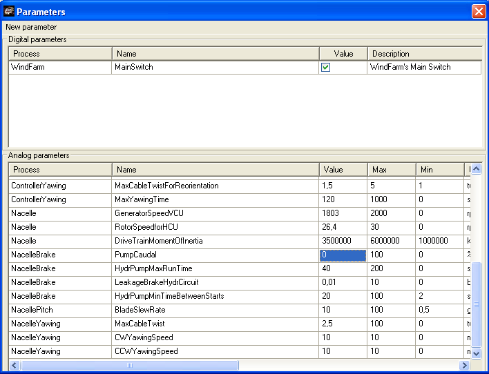

This experiment is to explore the reaction of the Controller to a problem in the pump of the hydraulic circuit of the Brake.
1.Star anew the simulator.
2.In the "Electrical Panel" set the "MainSwitch" to "On".
3.Press "Run" in "Executing"
4.Change the "PumpCaudal" to 0:
1."Executig.."-->"Synoptics"-->"Parameters"->"Analog Parameters"-->"NacelleBrake"."PumpCaudal": Set the value to 0

5.Look to the hydraulic circuit in the "SynopticDriveTrain" synoptic with "Internal view".
6.Check the "Manual STOP" in "Opened incidences" in "Control Terminal"
7.PressIn the "Control Terminal" press "START". Notice that as soon as the pitch raises the nominal position (0º to -5º) , the Controller start the pump, but the pressure does not goes up reaching the pressure switch. After the "HydrPumpMaxRunTime" the controller issues a "Pumping time too long" incidence and the Wind Turbine can not start operation.
8.In the "Control Terminal" the Operator can acknowledge the incidence, but to reset the condition, the Controller needs a signal that indicates pressure in the circuit. To do so, follow these steps:
1.Go to the "Synoptic DriveTrain"
2.Change to manual control of the Pump using the following procedure:
1.Set the mouse over the "Press switch" widget
2.press "F6" in the keyboard; the border line change to green indicating that this widget is no longer attached to the signal coming from the Controller.
Now you can set manually the "Press Switch" to on.
To return to normal state simply press again "F6", restoring the connection of the widget with the control coming from the Controller, and the Wind Turbine is ready to start.
9.Repeat this scenario with other ways to impede the pump to fill the hydraulic circuit:
1.Changing parameters, for instance setting a "LeakageBrakeHydrCircuit" greater than the "PumpCaudal", or setting a "HydrPumpMaxRunTime" so small that the "PumpCaudal" can not fill the circuit in this time.
2.Putting signals in manual in the "Synoptic DriveTrain", for instance forcing the on state on any of the brakes.